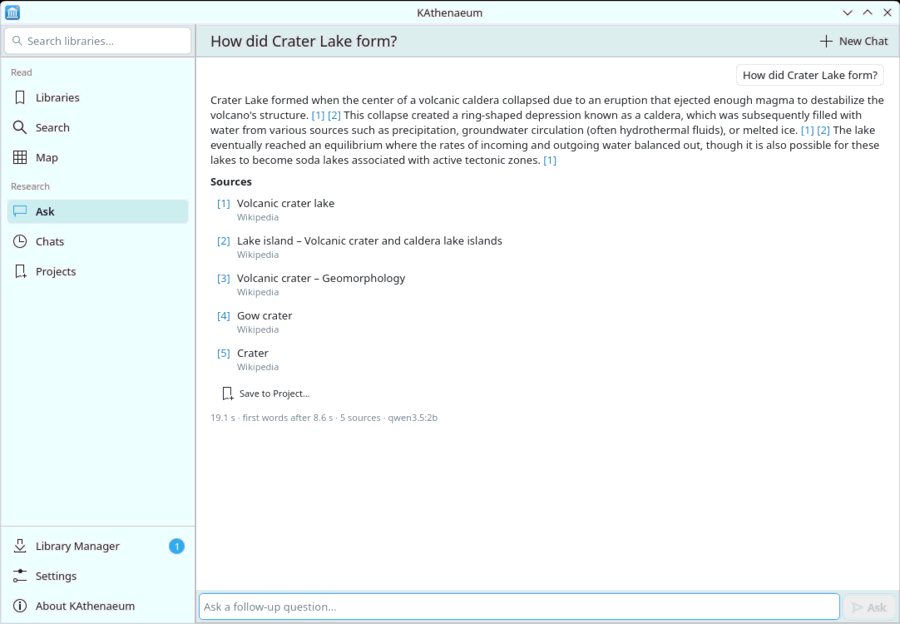

Choose Ask, type a question and press Enter. KAthenaeum finds the articles that bear on it in your libraries, reads their best passages, and the model writes an answer from them. The first words appear after a few seconds; ends the answer early and keeps what was written.

Under the answer:
[1], [2]… after a sentence name the source it matches. Click one to open that article at the section it comes from. These numbers are computed by KAthenaeum, which compares each sentence with the passages the model was given; they are not the model's own claims.
[?] marks a sentence that no source clearly supports, or a figure that appears in none of them: check it. It is a hint, not a fact-checker.
Sources lists the articles the answer was written from. keeps the answer in a research project.
If the libraries do not hold the answer, the assistant says it could not find it rather than answering from memory.